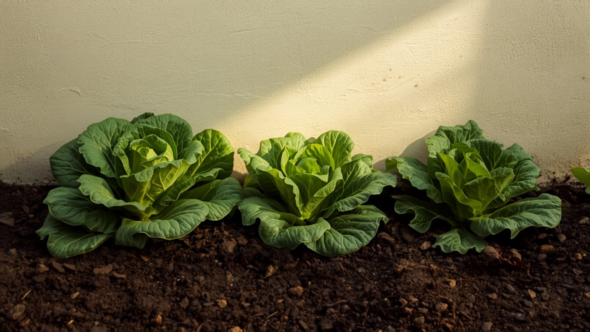

Welches Gemüse wächst im Schatten? Die ehrliche Liste
Fast jeder Garten hat eine Ecke, in der die Sonne nur vormittags hinkommt. Und fast jede Anbautabelle tut so, als gäbe es sie nicht.
Die Wahrheit liegt zwischen zwei Übertreibungen. Es stimmt nicht, dass im Schatten nichts wächst. Es stimmt aber auch nicht, was manche Listen versprechen: dass mit ein bisschen Geduld auch Tomaten gehen. Der Unterschied lässt sich in einem Satz sagen, und der Rest dieses Artikels ist nur die Ausbuchstabierung.
Die Regel, die alles entscheidet: Blatt geht, Frucht nicht
Ein Blatt ist das Sonnenkraftwerk der Pflanze. Es zu bauen kostet wenig, und es fängt auch bei wenig Licht noch etwas ein. Eine Frucht dagegen ist reine Investition: Zucker, Masse, Samen. Dafür braucht die Pflanze deutlich mehr Energie, als sie im Schatten hereinholt.
Daraus folgt die ganze Rangfolge. Blattgemüse kommt mit wenig Licht am besten zurecht. Wurzel- und Knollengemüse braucht mehr, weil es einen Speicher füllen muss. Fruchtgemüse braucht volle Sonne, und kein Trick ersetzt sie.
Erst zählen, dann pflanzen
Bevor du irgendetwas aussuchst, brauchst du eine Zahl: die Sonnenstunden, die auf diese Stelle wirklich fallen. Such dir einen wolkenlosen Tag und sieh alle zwei Stunden nach, ob die Stelle in der Sonne liegt. Das dauert einen Tag und ersetzt jede Schätzung – denn fast alle schätzen zu hoch, weil man tagsüber selten dort steht.
| Direkte Sonne pro Tag | Was daraus wird |
|---|---|
| 6 Stunden und mehr | vollsonnig – alles möglich, auch Fruchtgemüse |
| 3 bis 5 Stunden | Halbschatten – Blatt- und Wurzelgemüse, langsamer |
| unter 3 Stunden | Schatten – nur Blattgemüse und einige Kräuter |
| fast keine direkte Sonne | Vollschatten – Gemüseanbau lohnt nicht mehr |
Was im Halbschatten gut zurechtkommt
Drei bis fünf Stunden Sonne sind mehr, als die meisten denken. In diesem Bereich wächst der größte Teil des Blattgemüses zuverlässig, oft sogar besser als in der prallen Sonne.
| Kultur | Anmerkung |
|---|---|
| Pflück- und Kopfsalat | schießt im Halbschatten deutlich später als in voller Sonne |
| Spinat, Mangold | bleiben länger zart, gehen nicht so schnell in Blüte |
| Rucola, Asia-Salate | weniger scharf, dafür länger erntbar |
| Feldsalat | problemlos, wächst ohnehin in der lichtarmen Jahreszeit |
| Radieschen | gehen, brauchen aber ein bis zwei Wochen länger |
| Kohlrabi, Brokkoli, Grünkohl | etwas kleinere Köpfe, sonst unauffällig |
| Petersilie, Schnittlauch, Kerbel, Minze | vertragen Schatten besser als die mediterranen Kräuter |
| Rote Bete, Möhre | Grenzfall: sie gedeihen, bleiben aber kleiner |
| Erbsen, Buschbohnen | tragen, aber spürbar weniger als in der Sonne |
Der Nebeneffekt ist der eigentliche Gewinn: Salat und Spinat schießen in der Sommerhitze binnen Tagen in die Blüte und werden bitter. Ein halbschattiges Beet verschiebt diesen Punkt um Wochen. Wer im Juli noch zarten Pflücksalat ernten will, braucht keine Sonnenlage – er braucht eine schattige.
Was auch mit wenig Licht noch geht
Unter drei Sonnenstunden wird die Auswahl klein, aber sie ist nicht leer. Feldsalat, Postelein, Schnittsalat und Spinat liefern noch etwas. Dazu kommen die Stauden, die von Natur aus im Halbdunkel des Waldrands stehen: Bärlauch, Waldmeister, Sauerampfer, Minze und Rhabarber. Sie sind keine Notlösung, sondern genau dort zu Hause.
Was du dir sparen kannst
Alles, was eine Frucht bildet, braucht volle Sonne: Tomate, Paprika, Chili, Aubergine, Gurke, Zucchini, Kürbis, Melone, Mais. Im Halbschatten wachsen sie zwar, blühen spärlich, setzen kaum an und reifen nicht aus. Dazu kommt ein zweites Problem: Im Schatten trocknet das Laub nach Regen langsamer ab, und feuchtes Laub ist die Eintrittskarte für Pilzkrankheiten – bei Tomaten vor allem für Braunfäule. Auch Zwiebeln und Knoblauch gehören nicht ins Schattenbeet: Sie brauchen Licht und Trockenheit, um Knollen zu bilden und lagerfähig zu werden.
Baumschatten ist etwas anderes als Hausschatten
Der Schatten einer Nordwand nimmt nur Licht. Der Schatten eines Baumes nimmt Licht, Wasser und Nährstoffe zugleich, denn seine Wurzeln reichen ungefähr so weit wie seine Krone und sind jedem Gemüse überlegen. Ein Beet unter einem Baum konkurriert nicht mit dem Schatten, sondern mit dem Wurzelwerk.
Wo das nicht zu ändern ist, hilft nur Trennung: ein Hochbeet oder ein großes Gefäß mit eigenem Boden, notfalls mit Wurzelsperre nach unten. Der Aufbau ist derselbe wie bei jedem anderen Hochbeet, nur der Standort ist ungewöhnlich.
Vier Dinge, die im Schattenbeet anders laufen
Es dauert länger. Rechne bei jeder Kultur ein bis drei Wochen zusätzlich ein. Das ist wichtig, wenn du im Spätsommer noch säst, denn der Termin für die Herbstaussaat rückt damit nach vorn, nicht nach hinten.
Du gießt weniger – außer unter Bäumen. Weniger Sonne heißt weniger Verdunstung. Unter einem Baum gilt das Gegenteil, weil er selbst trinkt und die Krone einen Teil des Regens abfängt, bevor er den Boden erreicht.
Schnecken lieben genau diese Ecke. Feucht, kühl, schattig, dazu weiches Blattgemüse: das ist ihr bevorzugtes Gelände. Ohne konsequenten Schneckenschutz erntest du im Schattenbeet vor allem Löcher.
Pflanz weiter auseinander, nicht enger. Der Reflex, die knappe Fläche voll auszunutzen, ist verständlich und falsch. Wo ohnehin wenig Licht ankommt, darf sich das Laub nicht auch noch gegenseitig beschatten.
Der Fehler im Schattenbeet ist selten die Pflege. Er ist die Auswahl – getroffen nach dem, was man gern ernten würde, statt nach dem, was dort Licht bekommt. Zähl an einem sonnigen Tag die Stunden, schreib die Zahl auf, und such danach aus. Der Rest ist der übliche Garten.
Häufige Fragen
Wie viele Sonnenstunden braucht ein Gemüsebeet?
Ab sechs Stunden direkter Sonne ist alles möglich, auch Tomaten und Gurken. Zwischen drei und fünf Stunden wächst Blatt- und Wurzelgemüse zuverlässig, nur langsamer. Unter drei Stunden bleiben Blattgemüse und schattenverträgliche Kräuter.
Welches Gemüse wächst im Halbschatten?
Alle Salate, Spinat, Mangold, Rucola, Asia-Salate, Feldsalat, Radieschen, Kohlrabi, Brokkoli, Grünkohl sowie Petersilie, Schnittlauch und Minze. Möhre und Rote Bete gedeihen ebenfalls, bleiben aber kleiner.
Wachsen Tomaten auch im Schatten?
Nein. Tomaten brauchen volle Sonne, um Früchte anzusetzen und auszureifen. Im Halbschatten wächst die Pflanze zwar, blüht aber spärlich und setzt kaum an. Dazu trocknet das Laub nach Regen langsamer ab, was die Braunfäule begünstigt. Dasselbe gilt für Paprika, Aubergine, Gurke, Zucchini, Kürbis und Melone.
Warum ist Schatten unter Bäumen schwieriger als an einer Hauswand?
Weil ein Baum nicht nur Licht nimmt. Seine Wurzeln reichen etwa so weit wie seine Krone und entziehen dem Boden Wasser und Nährstoffe, und die Krone fängt einen Teil des Regens ab. An einer Nordwand fehlt nur das Licht. Unter einem Baum hilft meist nur ein Hochbeet mit eigenem Boden.
Hat ein schattiges Beet auch Vorteile?
Ja, im Hochsommer. Salat und Spinat schießen in praller Sonne binnen Tagen in die Blüte und werden bitter. Im Halbschatten verschiebt sich dieser Punkt um Wochen, und die Blätter bleiben zarter.
Hortini hinterlegt für jedes Beet, wie viel Sonne es bekommt, und schlägt beim Bepflanzen nur vor, was dort tatsächlich zurechtkommt.
Kostenlos ausprobieren